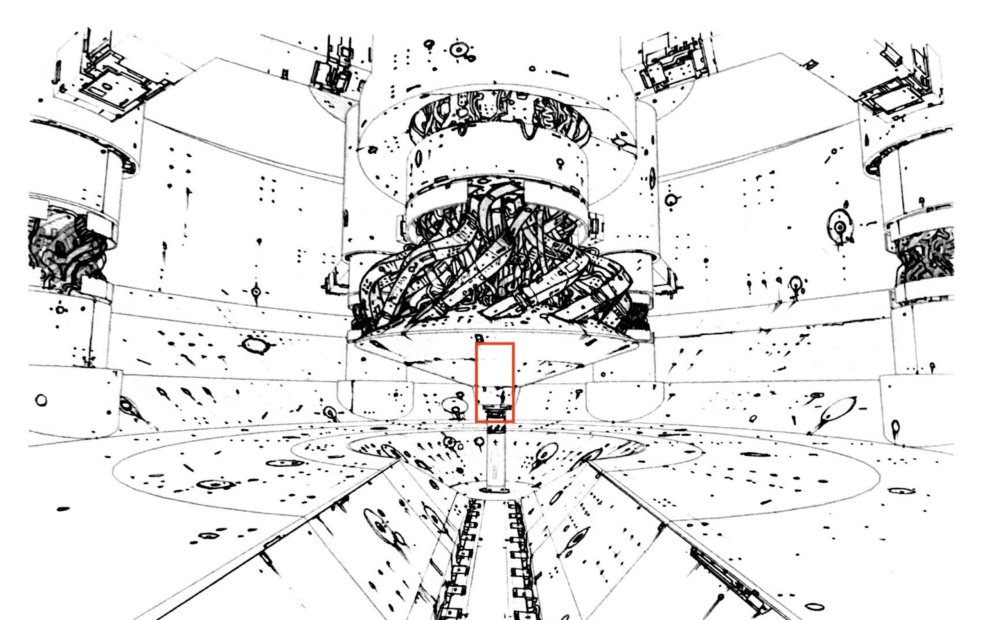

科技日新月異，機器人取代人力已不是空想而是事實 作為首個突破生物機械科技的SL公司，成功的使用機械取代人力而成為世界最強大且富有的集團，最終利用機器人推翻世界各國的現有政府。 SL的最高領導者”漢斯”將社會化分為3個階級 分為SL的高管以及同樣富有並曾經贊助SL公司推翻政府的腐敗權貴們，最後即是沒錢也無力的平民，SL持續生產機器人並用平民的意識作為啟動機器人的能源，執行高效率工作，而平民被轉移意識後會戴上面具運輸到各區再提供勞力，面具除了能束縛和定位底層人之外，也是操控沒意識的平民執行各種命令的關鍵裝置，逃過被轉移意識的女主角”潭雅”在幾年間默默計畫準備展開對”漢斯”的復仇。
-
發想: 主角為了後代和自己的理念而奮鬥角色: 人類、性別未知 時空背景: 2050，技術的發達使人們大量開始使用機器人作為生產主力，自動化占了 90%，勞力活被取代，中產階級更是不復存在，經濟的動盪使世界成為 m 型化社會，分成三派，一派是運用機械而掌控經濟的高層人士，另一派是操控機械資。
-
故事大綱: 生產機器人並控制這座城市生產線的企業 boss，使用底層人的意識啟動機器人來執行高度運算處理工作代替勞力提高效率，而底層人被轉移意識後會裝上面具運輸到各區提供勞力，面具除了能束縛和定位底層人之外，也是對沒了意識的底層人下達各種命令的關鍵裝置，逃過被轉移意識的主角，為了解放底層人默默展開對 boss 復仇以及抗爭。
-